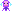

Meet the NitroArcade mascots
Original animated SVG pixel-art mascots — not emojis. Tap to hear their tips!

Pixie
Your sparkly arcade guide!
OmetoByte
Your offline developer assistant!
These mascots are artwork belonging to the NitroArcade team. Check the team’s usage terms before reusing them.